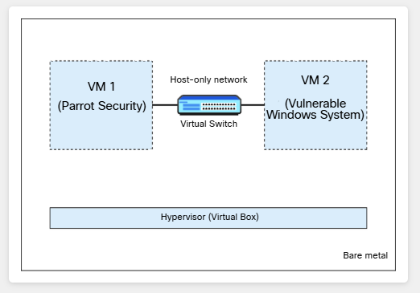
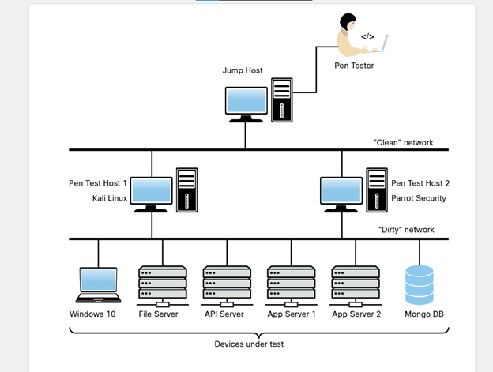
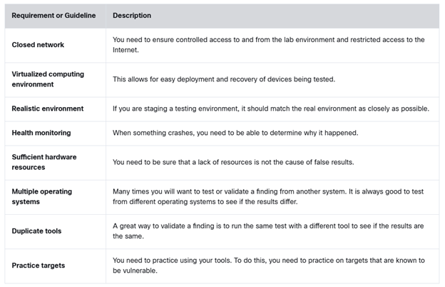

Introduction to Ethical Hacking and Penetration Testing
1.0 Introduction
1.0.1 Why Should I Take This Module?

Welcome to Protego! My name is Alex. I will be your mentor for your first 90 days here. Our recruiter was very impressed with your enthusiasm and desire to enter the cybersecurity profession.
We'll be working together to get you ready for your role as an entry-level penetration tester. We'll be talking about ways that you can prepare for participating in our customer engagements and I have a number of activities for you to complete that will quickly enhance your skills.
We will talk about some important big ideas in penetration testing and then get your practice lab environment up and running.
I know you will enjoy working at Protego, and I look forward to working with you as you grow in your career with us.
Before we jump into how to perform penetration testing, you first need to understand some core concepts about the "art of hacking" that will help you understand the other concepts discussed throughout this course. For example, you need to understand the difference between ethical hacking and unethical hacking. The tools and techniques used in this field change rapidly, so understanding the most current threats and attacker motivations is also important. Some consider penetration testing an art; however, this art needs to start out with a methodology if it is to be effective. Furthermore, you need to spend some time understanding the different types of testing and the industry methods used. Finally, this is a hands-on concept, and you need to know how to get your hands dirty by properly building a lab environment for testing.
1.0.2 What Will I Learn in This Module?
Module Title: Introduction to Ethical Hacking and Penetration Testing
Module Objective: Explain the importance of methodological ethical hacking and penetration testing.
| Topic Title | Topic Objective |
|---|---|
| Understanding Ethical Hacking and Penetration Testing | Explain the importance of ethical hacking and penetration testing. |
| Exploring Penetration Testing Methodologies | Explain different types of penetration testing methodologies and frameworks. |
| Building Your Own Lab | Configure a virtual machine for your penetration testing learning experience. |
1.1 Understanding Ethical Hacking and Penetration Testing
1.1.1 Overview

Alex here! We will be meeting periodically over the next few weeks so you can get oriented to working at Protego and also build your skills and knowledge as we increase your involvement in our customer engagements.
At the very heart of what we do is our purpose. You need to understand why we do what we do and who our enemies are. Once you have a strong foundation here, we can move on to understanding how we accomplish our purpose.
As a refresher, the term ethical hacker describes a person who acts as an attacker and evaluates the security posture of a computer network for the purpose of minimizing risk. The NIST Computer Security Resource Center (CSRC) defines a hacker as an "unauthorized user who attempts to or gains access to an information system." Now, we all know that the term hacker has been used in many different ways and has many different definitions. Most people in a computer technology field would consider themselves hackers based on the simple fact that they like to tinker. This is obviously not a malicious thing. So, the key factor here in defining ethical versus nonethical hacking is that the latter involves malicious intent. The permission to attack or permission to test is crucial and what will keep you out of trouble! This permission to attack is often referred to as "the scope" of the test (what you are allowed and not allowed to test). More on this later in this module.
A security researcher looking for vulnerabilities in products, applications, or web services is considered an ethical hacker if he or she responsibly discloses those vulnerabilities to the vendors or owners of the targeted research. However, the same type of "research" performed by someone who then uses the same vulnerability to gain unauthorized access to a target network/system would be considered a nonethical hacker. We could even go so far as to say that someone who finds a vulnerability and discloses it publicly without working with a vendor is considered a nonethical hacker – because this could lead to the compromise of networks/systems by others who use this information in a malicious way.
The truth is that as an ethical hacker, you use the same tools to find vulnerabilities and exploit targets as do nonethical hackers. However, as an ethical hacker, you would typically report your findings to the vendor or customer you are helping to make the network more secure. You would also try to avoid performing any tests or exploits that might be destructive in nature.
An ethical hacker's goal is to analyze the security posture of a network's or system's infrastructure in an effort to identify and possibly exploit any security weaknesses found and then determine if a compromise is possible. This process is called security penetration testing or ethical hacking.
Hacking is NOT a Crime (hackingisnotacrime.org) is a nonprofit organization that attempts to raise awareness about the pejorative use of the term hacker. Historically, hackers have been portrayed as evil or illegal. Luckily, a lot of people already know that hackers are curious individuals who want to understand how things work and how to make them more secure.

1.1.2 Why Do We Need to Do Penetration Testing?
So, why do we need penetration testing? Well, first of all, as someone who is responsible for securing and defending a network/system, you want to find any possible paths of compromise before the bad guys do. For years we have developed and implemented many different defensive techniques (for instance, antivirus, firewalls, intrusion prevention systems [IPSs], anti-malware). We have deployed defense-in-depth as a method to secure and defend our networks. But how do we know if those defenses really work and whether they are enough to keep out the bad guys? How valuable is the data that we are protecting, and are we protecting the right things? These are some of the questions that should be answered by a penetration test. If you build a fence around your yard with the intent of keeping your dog from getting out, maybe it only needs to be 4 feet tall. However, if your concern is not the dog getting out but an intruder getting in, then you need a different fence – one that would need to be much taller than 4 feet. Depending on what you are protecting, you might also want razor wire on the top of the fence to deter the bad guys even more. When it comes to information security, we need to do the same type of assessments on our networks and systems. We need to determine what it is we are protecting and whether our defenses can hold up to the threats that are imposed on them. This is where penetration testing comes in. Simply implementing a firewall, an IPS, anti-malware, a VPN, a web application firewall (WAF), and other modern security defenses isn't enough. You also need to test their validity. And you need to do this on a regular basis. As you know, networks and systems change constantly. This means the attack surface can change as well, and when it does, you need to consider reevaluating the security posture by way of a penetration test.
1.1.3 Lab – Researching PenTesting Careers

I think it is important for you to understand the employment landscape and the different roles and responsibilities that cybersecurity professions include. A good general reference to explore for descriptions of different job roles is The National Initiative for Cybersecurity Careers and Studies (NICCS) Cyber Career Pathways Tool. It offers a visual way to discover and compare different job roles in our profession.
In this activity, you discover and compare ethical hacking jobs that are listed on various job boards. Don't worry, we are not trying to get rid of you! We just want you to understand where you fit in to the big picture in our profession. I think that you will find that we are treating you very well, and rest assured that you have a lot of room to grow with us.
In this lab, you will complete the following objectives:
- Conduct a Penetration Tester Job Search
- Analyze Penetration Tester Job Requirements
- Discover Resources to Further Your Career
Which three internet job boards allow filtering job postings by seniority or experience level? (Choose three.)
1.1.4 Threat Actors
Before you can understand how an ethical hacker or penetration tester can mimic a threat actor (or malicious attacker), you need to understand the different types of threat actors. The following are the most common types of malicious attackers we see today.
Organized Crime
Several years ago, the cybercrime industry took over the number-one spot, previously held by the drug trade, for the most profitable illegal industry. As you can imagine, it has attracted a new type of cybercriminal. Just as it did back in the days of Prohibition, organized crime goes where the money is. Organized crime consists of very well-funded and motivated groups that will typically use any and all of the latest attack techniques. Whether that is ransomware or data theft, if it can be monetized, organized crime will use it.
Hacktivists
This type of threat actor is not motivated by money. Hacktivists are looking to make a point or to further their beliefs, using cybercrime as their method of attack. These types of attacks are often carried out by stealing sensitive data and then revealing it to the public for the purpose of embarrassing or financially affecting a target.
State-Sponsored Attackers
Cyber war and cyber espionage are two terms that fit into this category. Many governments around the world today use cyber attacks to steal information from their opponents and cause disruption. Many believe that the next Pearl Harbor will occur in cyberspace. That's one of the reasons the United States declared cyberspace to be one of the operational domains that U.S. forces would be trained to defend.
Insider Threats
An insider threat is a threat that comes from inside an organization. The motivations of these types of actors are normally different from those of many of the other common threat actors. Insider threats are often normal employees who are tricked into divulging sensitive information or mistakenly clicking on links that allow attackers to gain access to their computers. However, they could also be malicious insiders who are possibly motivated by revenge or money.
1.2 Exploring Penetration Testing Methodologies
1.2.1 Overview
There is more to penetration testing than hacking away at a customer's network. A haphazard approach will result in haphazard results. It is important to follow well-known methods and standards in order to approach pentesting engagements in an organized, systematic way.
You should understand the major documented methodologies and standards so that you can create strategies that draw on their strengths. Documenting your approach with the methodologies and standards that you used also provides accountability for our company and helps make our results defensible in case issues arise with our customers.
The process of completing a penetration test varies based on many factors. The tools and techniques used to assess the security posture of a network or system also vary. The networks and systems being evaluated are often highly complex. Because of this, it is very easy when performing a penetration test to go off scope. This is where testing methodologies come in.
1.2.2 Why Do We Need to Follow a Methodology for Penetration Testing?
As just mentioned, scope creep is one reason for utilizing a specific methodology; however, there are many other reasons. For instance, when performing a penetration test for a customer, you must show that the methods you plan to use for testing are tried and true. By utilizing a known methodology, you are able to provide documentation of a specialized procedure that has been used by many people.
1.2.3 Environmental Considerations
There are, of course, a number of different types of penetration tests. Often they are combined in the overall scope of a penetration test; however, they can also be performed as individual tests as well.
The following is a list of some of the most common environmental considerations for the types of penetration tests today:
Network Infrastructure Tests
Testing of the network infrastructure can mean a few things. For the purposes of this course, we say it is focused on evaluating the security posture of the actual network infrastructure and how it is able to help defend against attacks. This often includes the switches, routers, firewalls, and supporting resources, such as authentication, authorization, and accounting (AAA) servers and IPSs. A penetration test on wireless infrastructure may sometimes be included in the scope of a network infrastructure test. However, additional types of tests beyond a wired network assessment would be performed. For instance, a wireless security tester would attempt to break into a network via the wireless network either by bypassing security mechanisms or breaking the cryptographic methods used to secure the traffic. Testing the wireless infrastructure helps an organization to determine weaknesses in the wireless deployment as well as the exposure. It often includes a detailed heat map of the signal disbursement.
Application-Based Tests
This type of pen testing focuses on testing for security weaknesses in enterprise applications. These weaknesses can include but are not limited to misconfigurations, input validation issues, injection issues, and logic flaws. Because a web application is typically built on a web server with a back-end database, the testing scope normally includes the database as well. However, it focuses on gaining access to that supporting database through the web application compromise. A great resource that we mention a number of times in this book is the Open Web Application Security Project (OWASP).
Penetration Testing in the Cloud
Cloud service providers (CSPs) such as Azure, Amazon Web Services (AWS), and Google Cloud Platform (GCP) have no choice but to take their security and compliance responsibilities very seriously. For instance, Amazon created the Shared Responsibility Model to describe the AWS customers' responsibilities and Amazon's responsibilities in detail (see https://aws.amazon.com/compliance/shared-responsibility-model).
The responsibility for cloud security depends on the type of cloud model (software as a service [SaaS], platform as a service [PaaS], or infrastructure as a service [IaaS]). For example, with IaaS, the customer (cloud consumer) is responsible for data, applications, runtime, middleware, virtual machines (VMs), containers, and operating systems in VMs. Regardless of the model used, cloud security is the responsibility of both the client and the cloud provider. These details need to be worked out before a cloud computing contract is signed. These contracts vary depending on the security requirements of the client. Considerations include disaster recovery, service-level agreements (SLAs), data integrity, and encryption. For example, is encryption provided end to end or just at the cloud provider? Also, who manages the encryption keys–the CSP or the client?
Overall, you want to ensure that the CSP has the same layers of security (logical, physical, and administrative) in place that you would have for services you control. When performing penetration testing in the cloud, you must understand what you can do and what you cannot do. Most CSPs have detailed guidelines on how to perform security assessments and penetration testing in the cloud. Regardless, there are many potential threats when organizations move to a cloud model. For example, although your data is in the cloud, it must reside in a physical location somewhere. Your cloud provider should agree in writing to provide the level of security required for your customers. As an example, the following link includes the AWS Customer Support Policy for Penetration Testing: https://aws.amazon.com/security/penetration-testing.
Many penetration testers find the physical aspect of testing to be the most fun because they are essentially being paid to break into the facility of a target. This type of test can help expose any weaknesses in the physical perimeter as well as any security mechanisms that are in place, such as guards, gates, and fencing. The result should be an assessment of the external physical security controls. The majority of compromises today start with some kind of social engineering attack. This could be a phone call, an email, a website, an SMS message, and so on. It is important to test how your employees handle these types of situations. This type of test is often omitted from the scope of a penetration testing engagement mainly because it primarily involves testing people instead of the technology. In most cases, management does not agree with this type of approach. However, it is important to get a real-world view of the latest attack methods. The result of a social engineering test should be to assess the security awareness program so that you can enhance it. It should not be to identify individuals who fail the test. One of the tools that we talk about more in a later module is the Social-Engineer Toolkit (SET), created by Dave Kennedy. This is a great tool for performing social engineering testing campaigns.
Bug bounty programs enable security researchers and penetration testers to get recognition (and often monetary compensation) for finding vulnerabilities in websites, applications, or any other types of systems. Companies like Microsoft, Apple, and Cisco and even government institutions such as the U.S. Department of Defense (DoD) use bug bounty programs to reward security professionals when they find vulnerabilities in their systems. Many security companies, such as HackerOne, Bugcrowd, Intigriti, and SynAck, provide platforms for businesses and security professionals to participate in bug bounty programs. These programs are different from traditional penetration testing engagements but have a similar goal: finding security vulnerabilities to allow the organization to fix them before malicious attackers are able to exploit such vulnerabilities. I have included different bug bounty tips and resources in my GitHub repository at: https://github.com/The-Art-of-Hacking/h4cker/tree/master/bug-bounties.
When talking about penetration testing methods, you are likely to hear the terms unknown-environment (previously known as black-box), known-environment (previously known as white-box), and partially known environment (previously known as gray-box) testing. These terms are used to describe the perspective from which the testing is performed, as well as the amount of information that is provided to the tester:
Unknown-Environment Test
In an unknown-environment penetration test, the tester is typically provided only a very limited amount of information. For instance, the tester may be provided only the domain names and IP addresses that are in scope for a particular target. The idea of this type of limitation is to have the tester start out with the perspective that an external attacker might have. Typically, an attacker would first determine a target and then begin to gather information about the target, using public information, and gain more and more information to use in attacks. The tester would not have prior knowledge of the target's organization and infrastructure. Another aspect of unknown-environment testing is that sometimes the network support personnel of the target may not be given information about exactly when the test is taking place. This allows for a defense exercise to take place as well, and it eliminates the issue of a target preparing for the test and not giving a real-world view of how the security posture really looks.
Known-Environment Test
In a known-environment penetration test, the tester starts out with a significant amount of information about the organization and its infrastructure. The tester would normally be provided things like network diagrams, IP addresses, configurations, and a set of user credentials. If the scope includes an application assessment, the tester might also be provided the source code of the target application. The idea of this type of test is to identify as many security holes as possible. In an unknown-environment test, the scope may be only to identify a path into the organization and stop there. With known-environment testing, the scope is typically much broader and includes internal network configuration auditing and scanning of desktop computers for defects. Time and money are typically deciding factors in the determination of which type of penetration test to complete. If a company has specific concerns about an application, a server, or a segment of the infrastructure, it can provide information about that specific target to decrease the scope and the amount of time spent on the test but still uncover the desired results. With the sophistication and capabilities of adversaries today, it is likely that most networks will be compromised at some point, and a white-box approach is not a bad option.
Partially Known Environment Test
A partially known environment penetration test is somewhat of a hybrid approach between unknown- and known-environment tests. With partially known environment testing, the testers may be provided credentials but not full documentation of the network infrastructure. This would allow the testers to still provide results of their testing from the perspective of an external attacker's point of view. Considering the fact that most compromises start at the client and work their way throughout the network, a good approach would be a scope where the testers start on the inside of the network and have access to a client machine. Then they could pivot throughout the network to determine what the impact of a compromise would be.
1.2.4 Practice – Types of Penetration Tests
Protego has been contracted to do a network infrastructure test as part of a broader penetration testing engagement. What will you be targeting in this test? (Choose three.)
- the digital storefront
- virtual machines (VM) that are running in the cloud
- IPS devices
- switches
- AAA servers
1.2.5 Surveying Different Standards and Methodologies
There are a number of penetration testing methodologies that have been around for a while and continue to be updated as new threats emerge.
The following is a list of some of the most common penetration testing methodologies and other standards:
MITRE ATT&CK
The MITRE ATT&CK framework (https://attack.mitre.org) is an amazing resource for learning about an adversary's tactics, techniques, and procedures (TTPs). Both offensive security professionals (penetration testers, red teamers, bug hunters, and so on) and incident responders and threat hunting teams use the MITRE ATT&CK framework today. The MITRE ATT&CK framework is a collection of different matrices of tactics, techniques, and subtechniques. These matrices–including the Enterprise ATT&CK Matrix, Network, Cloud, ICS, and Mobile–list the tactics and techniques that adversaries use while preparing for an attack, including gathering of information (open-source intelligence [OSINT], technical and people weakness identification, and more) as well as different exploitation and post-exploitation techniques. You will learn more about MITRE ATT&CK throughout this course.
OWASP WSTG
The OWASP Web Security Testing Guide (WSTG) is a comprehensive guide focused on web application testing. It is a compilation of many years of work by OWASP members. OWASP WSTG covers the high-level phases of web application security testing and digs deeper into the testing methods used. For instance, it goes as far as providing attack vectors for testing cross-site scripting (XSS), XML external entity (XXE) attacks, cross-site request forgery (CSRF), and SQL injection attacks; as well as how to prevent and mitigate these attacks. You will learn more about these attacks in Module 6, "Exploiting Application-Based Vulnerabilities." From a web application security testing perspective, OWASP WSTG is the most detailed and comprehensive guide available. You can find the OWASP WSTG and related project information at https://owasp.org/www-project-web-security-testing-guide/.
NIST SP 800-115
Special Publication (SP) 800-115 is a document created by the National Institute of Standards and Technology (NIST), which is part of the U.S. Department of Commerce. NIST SP 800-115 provides organizations with guidelines on planning and conducting information security testing. It superseded the previous standard document, SP 800-42. SP 800-115 is considered an industry standard for penetration testing guidance and is called out in many other industry standards and documents. You can access NIST SP 800-115 at https://csrc.nist.gov/publications/detail/sp/800-115/final.
OSSTMM
The Open Source Security Testing Methodology Manual (OSSTMM), developed by Pete Herzog, has been around a long time. Distributed by the Institute for Security and Open Methodologies (ISECOM), the OSSTMM is a document that lays out repeatable and consistent security testing (https://www.isecom.org). It is currently in version 3, and version 4 is in draft status. The OSSTMM has the following key sections:
- Operational Security Metrics
- Trust Analysis
- Work Flow
- Human Security Testing
- Physical Security Testing
- Wireless Security Testing
- Telecommunications Security Testing
- Data Networks Security Testing
- Compliance Regulations
- Reporting with the Security Test Audit Report (STAR)
PTES
The Penetration Testing Execution Standard (PTES) (http://www.pentest-standard.org) provides information about types of attacks and methods, and it provides information on the latest tools available to accomplish the testing methods outlined. PTES involves seven distinct phases:
- Pre-engagement interactions
- Intelligence gathering
- Threat modeling
- Vulnerability analysis
- Exploitation
- Post-exploitation
- Reporting
ISSAF
The Information Systems Security Assessment Framework (ISSAF) is another penetration testing methodology similar to the others on this list with some additional phases. ISSAF covers the following phases:
- Information gathering
- Network mapping
- Vulnerability identification
- Penetration
- Gaining access and privilege escalation
- Enumerating further
- Compromising remote users/sites
- Maintaining access
- Covering the tracks
1.2.6 Lab – Compare Pentesting Methodologies
There are so many moving parts to a penetration testing engagement that it is easy to lose track of what has been covered and what has not. Gaps in test coverage are harmful to our reputation at Protego and to our customers. We must be systematic in the way that we approach our penetration testing engagements.
No single methodology is suitable for the requirements of every engagement; however it is important to ground your practice in standards and methodologies that have been developed by security organizations and recognized experts.
Use this lab as an opportunity to get familiar with various security assessment methodologies. Focus on practices that make sense to you and that you can incorporate into your own practice as an ethical hacker.
In this lab, you will complete the following objectives:
- Compare Various Pentesting Methodologies
- Conduct Research on Popular Pentesting Methodologies
Under what tactic in the MITRE ATT&CK matrix would you find the information gathering stage of the Operation Dream Job procedure?
1.3 Building Your Own Lab
1.3.1 Overview
Now comes the fun part! It is really important that you develop your skills so that you can maximize your contributions to our teams here at Protego. Skills come with practice, but how can you practice if you don't have something to practice on?
It is not possible for you to practice on our clients' networks and applications. However, you can practice on simulated targets, networks that you have permission to access, and certain sites on the open internet. Remember! Some tools and techniques that are used in ethical hacking can be seen as illegal. What's more, the definition of what is legal or illegal can differ from place to place. Before you use ethical hacking tools on any network or application, carefully consider the legality of what you are planning to do. When in doubt, research the law and ask others for advice.
In this topic, you will install and explore a Kali Linux virtual machine (VM) that is full of popular ethical hacking tools. The VM also includes simulated internal IP networks that include a variety of intentionally vulnerable systems.
When it comes to penetration testing, a proper lab environment is very important. The way this environment looks depends on the type of testing you are doing. The types of tools used in a lab also vary based on different factors. We discuss tools in more detail in Module 10, "Tools and Code Analysis." Here we only touch on some of the types of tools used in penetration testing. Whether you are performing penetration testing on a customer network, your own network, or a specific device, you always need some kind of lab environment to use for testing. For example, when testing a customer network, you will most likely be doing the majority of your testing against the customer's production or staging environments because these are the environments a customer is typically concerned about securing properly. Because this might be a critical network environment, you must be sure that your tools are tried and true – and this is where your lab testing environment comes in. You should always test your tools and techniques in your lab environment before running them against a customer network. There is no guarantee that the tools you use will not break something. In fact, many tools are actually designed for breaking things. You therefore need to know what to expect before unleashing tools on a customer network. When testing a specific device or solution that is only in a lab environment, there is less concern about breaking things. With this type of testing, you would typically use a closed network that can easily be reverted if needed.
There are many different Linux distributions that include penetration testing tools and resources, such as Kali Linux (kali.org), Parrot OS (parrotsec.org), and BlackArch (blackarch.org). These Linux distributions provide you with a very convenient environment to start learning about the different security tools and methodologies used in pen testing. You can deploy a basic penetration testing lab using just a couple of VMs in virtualization environments such as Virtual Box (virtualbox.org) or VMware Workstation/Fusion (vmware.com).
Figure 1-1 shows two VMs (one running Parrot OS and another running a vulnerable Microsoft Windows system). The two VMs are connected via a virtual switch configuration and a "host-only network." This type of setup allows you to perform different attacks and send IP packets between VMs without those packets leaving the physical (bare-metal) system.

You can start a basic learning lab with just one VM. For example, Omar Santos created a free learning environment called WebSploit Labs that you can deploy on a single VM. It includes numerous cybersecurity resources, tools, and several intentionally vulnerable applications running in Docker containers. WebSploit Labs include more than 450 different exercises that you can complete to practice your skills in a safe environment. You can obtain more information about WebSploit Labs at websploit.org. The VM you download in the lab later in this topic is a customized version of Omar Santos' lab environment.
Figure 1-2 shows a more elaborate topology for a penetration testing lab environment.

1.3.2 Requirements and Guidelines for Penetration Testing Labs
Now let's dig a bit deeper into what a penetration testing lab environment might look like and some best practices for setting up such a lab. The following table contains a list of requirements and guidelines for a typical penetration testing environment.

1.3.3 What Tools Should You Use in Your Lab?
Module 10 is dedicated to penetration testing tools. Therefore, this section only scratches the surface. Basically, the tools you use in penetration testing depend on the type of testing you are doing. If you are doing testing on a customer environment, you will likely be evaluating various attack surfaces – such as network infrastructure, wireless infrastructure, web servers, database servers, Windows systems, or Linux systems, for example.
Network infrastructure-based tools might include tools for sniffing or manipulating traffic, flooding network devices, and bypassing firewalls and IPSs. For wireless testing purposes, you might use tools for cracking wireless encryption, de-authorizing network devices, and performing on-path attacks (also called man-in-the-middle attacks).
When testing web applications and services, you can find a number of automated tools built specifically for scanning and detecting web vulnerabilities, as well as manual testing tools such as interception proxies. Some of these same tools can be used to test for database vulnerabilities (such as SQL injection vulnerabilities).
For testing the server and client platforms in an environment, you can use a number of automated vulnerability scanning tools to identify things such as outdated software and misconfigurations. With a lot of development targeting mobile platforms, there is an increasing need for testing these applications and the servers that support them. For such testing, you need another set of tools specific to testing mobile applications and the back-end APIs that they typically communicate with. And you should not forget about fuzzing tools, which are normally used for testing the robustness of protocols.
Omar Santos created a GitHub repository that includes numerous cybersecurity resources. There is a section dedicated to providing guidance on how to build different penetration testing labs and where to get vulnerable applications, servers, and tools to practice your skills in a safe environment. You can access the repository at https://h4cker.org/github. You can directly access the section "Building Your Own Cybersecurity Lab and Cyber Range" at https://github.com/The-Art-of-Hacking/h4cker/tree/master/build_your_own_lab.
1.3.4 Practice – Requirements and Guidelines for Penetration Testing Labs
You need to setup a penetration testing practice lab because some of the tools that are preferred at Protego are new to you. What best practices will you follow as you setup your lab? (Choose three.)
- Ensure closed access to the network and internet.
- Create a virtualized computing environment.
- Provide sufficient hardware resources to ensure valid results.
- Utilize the same tool for consistent results.
- Test using one common operating system.
- Use hardened targets for more challenging tests.
1.3.5 What If You Break Something?
Being able to recover your lab environment is important for many reasons. As discussed earlier, when doing penetration testing, you will break things; sometimes when you break things, they do not recover on their own. For instance, when you are testing web applications, some of the attacks you send will input bogus data into form fields, and that data will likely end up in the database, so your database will be filled with that bogus data. Obviously, in a production environment, this is not a good thing. The data being input can also be of malicious nature, such as scripting and injection attacks. This can cause corruption of the database as well. Of course, you know that this would be an issue in a production environment. It is also an issue in a lab environment if you do not have an easy way to recover. Without a quick recovery method, you would likely be stuck rebuilding your system under test. This can be time-consuming, and if you are doing this for a customer, it can affect your overall timeline.
Using some kind of virtual environment is ideal as it offers snapshot and restore features for the system state. Sometimes this is not possible, though. For example, you may be testing a system that cannot be virtualized. In such a case, having a full backup of the system or environment is required. This way, you can quickly be back up and testing if something gets broken – because it most likely will. After all, you are doing penetration testing.
1.3.6 Lab – Deploy a Pre-Built Kali Linux Virtual Machine (VM)
Kali is a great tool! We are providing you with a working version of it that you can use to learn new tools and practice penetration testing techniques. The Kali Linux version that I am giving you contains all of the Kali tools and several networked simulated targets that you can practice on without risking legal problems. I encourage you to use the simulated targets and other networks that you have permission to scan, such as your home network. Be careful though, Kali provides some very powerful tools!
First you need to install and run the virtual machine, and then the fun begins!
In this lab, you will complete the following objectives:
- Part 1: Deploying a Customized Kali Linux VM on AMD or Intel Chip-based Computer
- Part 2: Deploying a Customized Kali Linux VM on ARM M1/M2 based MacOS Computer
- Part 3: Exploring Linux
▶ Lab Demonstration Video
You have just downloaded and installed VirtualBox or UTM. You start the application, but you do not see the Kali VM running. What step did you forget?
1.3.7 Lab – Investigate Kali Linux
Kali can be a little overwhelming at first because it has so many tools. It is a Linux distro, so if you don't have good Linux skills it can be hard to use. Many tools only operate in a terminal. To help you get the most from Kali, use this lab as an opportunity to get familiar with it and brush up on your basic Linux skills.
In this lab, you will complete the following objectives:
- Familiarize yourself with the Kali Linux GUI.
- Familiarize yourself with the Kali Linux shell.
/home/kali
You have just started Kali and open a terminal from the panel. What
will the response be when you enter the pwd command at
the prompt?